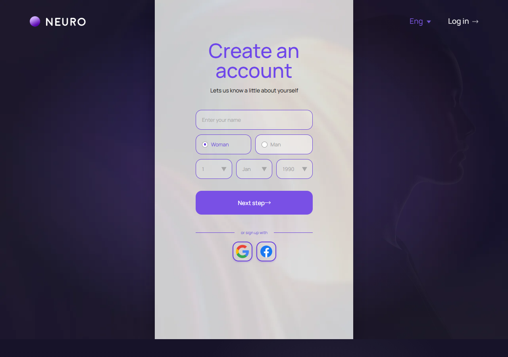
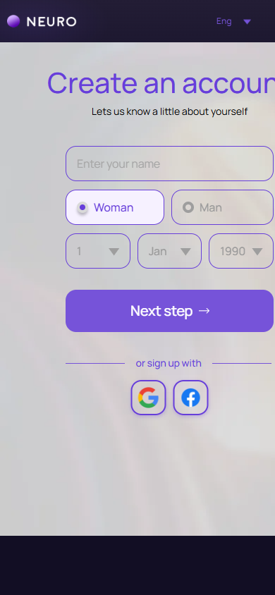

Регистрация: личные данные
signup-create.html
Собрать предусмотренные поля первого шага.
| Когда открывается | Create account |
|---|---|
| Данные | Имя; дата рождения; временный черновик; согласованный возраст допуска. |
| Сценарий | Next проверяет введенное, сохраняет черновик и открывает второй шаг. OAuth продолжает существующий безопасный поток. |
| Переходы | Регистрация: учетные данные |
Возрастной порог не задавать по статичному году; взять утвержденные условия сервиса.
Общая и предметная логика. Снимки и подписи элементов — исходная редакция макета; поздние уточнения ТЗ имеют приоритет в своей области. Это не проверка текущего сайта.
Сопоставление с AskNebula
Существующие наблюдения 07–09.10.2026, без повторной проверки в этой передаче.
Справка упоминает самостоятельную регистрацию; точное соответствие этому шагу не установлено.
Состояние 1280 · 1280 × 900


Элементы и ожидаемые действия
| Элемент | Название в макете | Действие | Ожидаемый результат |
|---|---|---|---|
| E001 Скрыт в этом состоянии | na-auth-burger | Декоративный элемент шапки auth в исходнике, помеченный как неактивный. | Не выдавать его за работающий вход/сохранение. Если меню/тема нужны при интеграции, связать с общей шапкой без изменения композиции. |
| E002 Виден | Home | Открыть адрес из исходника: home.html. | Сохранить авторизацию и переданный контекст. Backend-only маршрут связывает Игорь; открытие не выполняет денежное действие. |
| E003 Виден | Log in | Открыть адрес из исходника: login.html. | Сохранить авторизацию и переданный контекст. Backend-only маршрут связывает Игорь; открытие не выполняет денежное действие. |
| E004 Скрыт в этом состоянии | Декоративный элемент шапки auth в исходнике, помеченный как неактивный. | Не выдавать его за работающий вход/сохранение. Если меню/тема нужны при интеграции, связать с общей шапкой без изменения композиции. | |
| E005 Виден | Your name | Заполнить поле текущей формы: Your name. | Черновик сохраняется при ошибке; допустимая длина/обязательность валидируются сервером. Отправка относится к сценарию «Регистрация: личные данные». |
| E006 Скрыт в этом состоянии | gender | Изменить явно названный выбор формы. | Само изменение черновика не создает оплату или сохраненный объект; последующее подтверждение следует сценарию экрана. |
| E007 Скрыт в этом состоянии | gender | Изменить явно названный выбор формы. | Само изменение черновика не создает оплату или сохраненный объект; последующее подтверждение следует сценарию экрана. |
| E008 Виден | Birth day | Ввести реальную календарную дату в указанном формате. | Будущая/невозможная дата отклоняется. Возрастной допуск берется из утвержденных правил, не из fixture. |
| E009 Виден | Birth month | Ввести реальную календарную дату в указанном формате. | Будущая/невозможная дата отклоняется. Возрастной допуск берется из утвержденных правил, не из fixture. |
| E010 Виден | Birth year | Ввести реальную календарную дату в указанном формате. | Будущая/невозможная дата отклоняется. Возрастной допуск берется из утвержденных правил, не из fixture. |
| E011 Виден | Next step | Проверить поля первого шага, сохранить черновик и перейти ко второму. | Учетная запись еще не объявляется созданной; ошибки показаны возле полей. |
| E012 Виден | Sign up with Google | Начать существующий вход через выбранного провайдера. | Успех возвращает безопасный returnTo; отказ остается входом без создания платной консультации. |
| E013 Виден | Sign up with Facebook | Начать существующий вход через выбранного провайдера. | Успех возвращает безопасный returnTo; отказ остается входом без создания платной консультации. |
| E014 Скрыт в этом состоянии | auth-form-status | Информационный блок/область фокуса, не самостоятельная команда. | Показывать актуальные данные соответствующего сценария; фокус или чтение не выполняют мутацию. |
Состояние 390 · 390 × 844


Элементы и ожидаемые действия
| Элемент | Название в макете | Действие | Ожидаемый результат |
|---|---|---|---|
| E001 Скрыт в этом состоянии | na-auth-burger | Декоративный элемент шапки auth в исходнике, помеченный как неактивный. | Не выдавать его за работающий вход/сохранение. Если меню/тема нужны при интеграции, связать с общей шапкой без изменения композиции. |
| E002 Виден | Home | Открыть адрес из исходника: home.html. | Сохранить авторизацию и переданный контекст. Backend-only маршрут связывает Игорь; открытие не выполняет денежное действие. |
| E003 Виден | Log in | Открыть адрес из исходника: login.html. | Сохранить авторизацию и переданный контекст. Backend-only маршрут связывает Игорь; открытие не выполняет денежное действие. |
| E004 Скрыт в этом состоянии | Декоративный элемент шапки auth в исходнике, помеченный как неактивный. | Не выдавать его за работающий вход/сохранение. Если меню/тема нужны при интеграции, связать с общей шапкой без изменения композиции. | |
| E005 Виден | Your name | Заполнить поле текущей формы: Your name. | Черновик сохраняется при ошибке; допустимая длина/обязательность валидируются сервером. Отправка относится к сценарию «Регистрация: личные данные». |
| E006 Скрыт в этом состоянии | gender | Изменить явно названный выбор формы. | Само изменение черновика не создает оплату или сохраненный объект; последующее подтверждение следует сценарию экрана. |
| E007 Скрыт в этом состоянии | gender | Изменить явно названный выбор формы. | Само изменение черновика не создает оплату или сохраненный объект; последующее подтверждение следует сценарию экрана. |
| E008 Виден | Birth day | Ввести реальную календарную дату в указанном формате. | Будущая/невозможная дата отклоняется. Возрастной допуск берется из утвержденных правил, не из fixture. |
| E009 Виден | Birth month | Ввести реальную календарную дату в указанном формате. | Будущая/невозможная дата отклоняется. Возрастной допуск берется из утвержденных правил, не из fixture. |
| E010 Виден | Birth year | Ввести реальную календарную дату в указанном формате. | Будущая/невозможная дата отклоняется. Возрастной допуск берется из утвержденных правил, не из fixture. |
| E011 Виден | Next step | Проверить поля первого шага, сохранить черновик и перейти ко второму. | Учетная запись еще не объявляется созданной; ошибки показаны возле полей. |
| E012 Виден | Sign up with Google | Начать существующий вход через выбранного провайдера. | Успех возвращает безопасный returnTo; отказ остается входом без создания платной консультации. |
| E013 Виден | Sign up with Facebook | Начать существующий вход через выбранного провайдера. | Успех возвращает безопасный returnTo; отказ остается входом без создания платной консультации. |
| E014 Скрыт в этом состоянии | auth-form-status | Информационный блок/область фокуса, не самостоятельная команда. | Показывать актуальные данные соответствующего сценария; фокус или чтение не выполняют мутацию. |